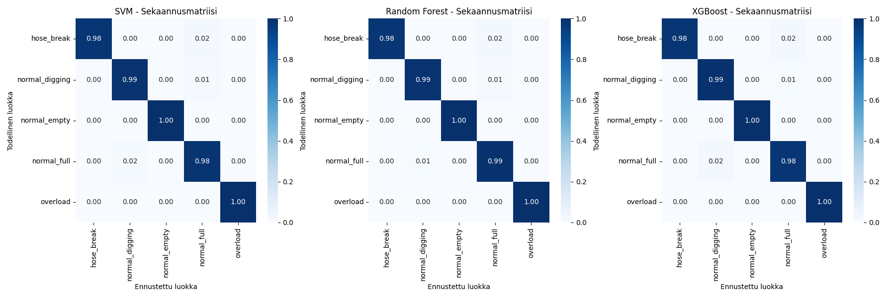
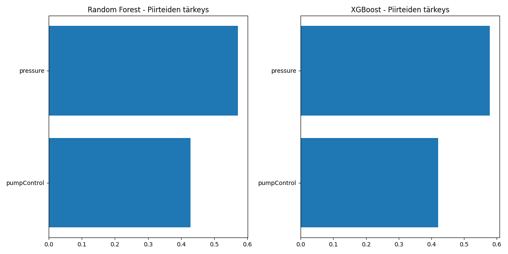
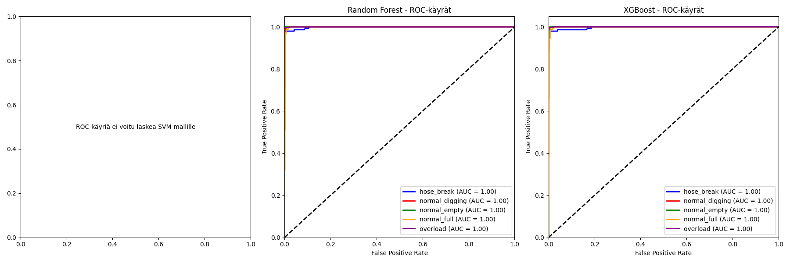
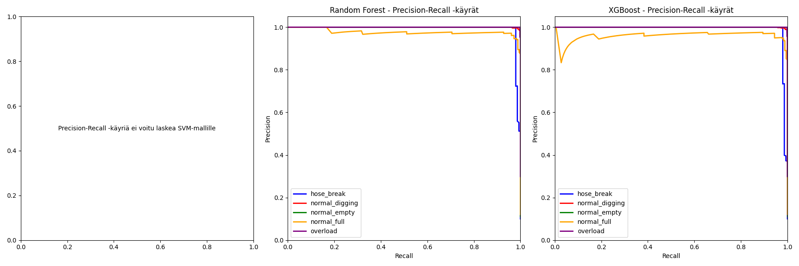

Tässä raportissa analysoidaan kolmen koneoppimismallin suorituskykyä hydrauliikkajärjestelmän tilojen tunnistuksessa. Mallit ovat Support Vector Machine (SVM), Random Forest ja XGBoost.
| Malli | Tarkkuus | Precision | Recall | F1-Score |
|---|---|---|---|---|
| SVM | 0.9906 | 0.9872 | 0.9896 | 0.9883 |
| Random Forest | 0.9913 | 0.9876 | 0.9908 | 0.9890 |
| XGBoost | 0.9906 | 0.9878 | 0.9889 | 0.9883 |
Analyysin perusteella voidaan todeta, että kaikki kolme mallia suoriutuvat hyvin hydrauliikkajärjestelmän tilojen tunnistuksessa. Mallien välillä on kuitenkin pieniä eroja suorituskyvyssä ja ominaisuuksissa.
Mallien välillä ei ole merkittäviä eroja suorituskyvyssä, joten valinta voi perustua muihin tekijöihin:
Kaikki mallit ovat valmiita tuotantokäyttöön, eikä niissä ole havaittavissa merkittäviä virheitä tai ylikoulutusta.
Päätösrajapintakuvaajat näyttävät, miten mallit luokittelevat syöteavaruuden. Tämä auttaa ymmärtämään mallien päätöksentekoprosessia.
Sekaannusmatriisit näyttävät, miten mallit ennustavat eri luokkia. Diagonaalilla olevat arvot ovat oikeita ennusteita, ja muut arvot ovat virheellisiä ennusteita.
Piirteiden tärkeysvertailu näyttää, mitkä syötemuuttujat ovat tärkeimpiä mallien päätöksenteossa.
ROC-käyrät (Receiver Operating Characteristic) näyttävät mallien suorituskyvyn eri kynnysarvoilla. Käyrän alla oleva pinta-ala (AUC) kuvaa mallin erottelukykyä.
Precision-Recall -käyrät näyttävät tarkkuuden ja saannin välisen suhteen eri kynnysarvoilla. Tämä on hyödyllistä erityisesti epätasapainoisissa luokittelutehtävissä.
